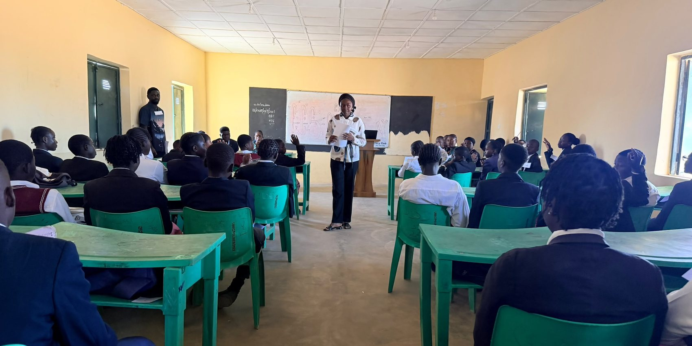

Our work
One relationship, and everything built on it
The conferences bring young people to us. The parliament gives them somewhere to practise. The mentoring is what actually changes anything.
One
Mentorship
Every young person who joins us is matched with a mentor and placed in a small group. They meet regularly, in person where possible, for as long as the relationship is useful. Some have lasted years.
What a mentor actually helps with
- Direction. What to study, whether to study, what work is realistic now and what is worth building toward.
- Money. How to earn it, keep it and plan with it, so that no one has to take a bad offer because they are short this month.
- Clear thinking. How to weigh an argument, check a claim before repeating it, and hold a position without shouting.
- Standing up. Speaking in front of people, handling responsibility, and recovering when something goes badly.
- Staying well. The health, habits and support a person needs to keep going, including the parts nobody talks about.
- Passing it on. Every young person we mentor is expected to mentor someone after them. That is how a small organisation becomes a long one.

Two
The Students’ Parliament
Civic habit is not taught at an event. It is practised inside an institution.
Our flagship in secondary schools. A standing House of students aged thirteen to eighteen, drawn from several schools at once, which meets through the school year and runs itself.
- They elect their own officers. Twelve offices, decided by secret ballot of every member, with three reserved for the youngest students so they are not spectators.
- They write their own rules. The House adopts standing orders it has argued over, and keeps minutes any student in the school may read.
- They set their own agenda. Every motion debated is one a student wrote. Nothing is handed down.
- It continues. Four standing committees — welfare, academics, environment and health, and sport and culture — carry work between sittings. Each has a chair answerable to the House and one concrete task to report on when it meets again next term.

Three
Nation Building Conferences
We take a day inside a tertiary institution, with the student body or a faculty hosting, and we put the question plainly to the students in the room: this country is coming to you, so what are you going to do with it? It is not a lecture and it is not a rally. It is a challenge, followed by an offer.
A day on campus
Sessions, speakers and open floor, in a hall the students already know, hosted with people they already trust.
A direct challenge
Nobody leaves with only inspiration. Every attendee leaves with something specific being asked of them.
A cohort, not a crowd
Students who take up the offer join our mentoring groups. We measure a conference by how many stay, not by how many came.

Four
Community, and the practical help around it
Mentoring works better inside a group than in isolation, so our young people belong to a crew that meets, works on things together, and stays in touch long after the formal part has ended.
Alongside it we do the practical work a particular group of young people needs at a particular time. We have taught trades to young people whose lives had come apart, so they could earn honestly and be received back into their communities with dignity. We help others with school, with a first business, with health, with whatever is actually standing in the way. We do not run these as branded programmes. We do them because a mentor cannot ignore what is in front of them.
What comes next
The hard part is already done
Standing orders, facilitator guides, ballot procedure and a members’ handbook are written and ready to be handed to a school that wants one. What a new House needs now is a room, a few people and the fare to get there.